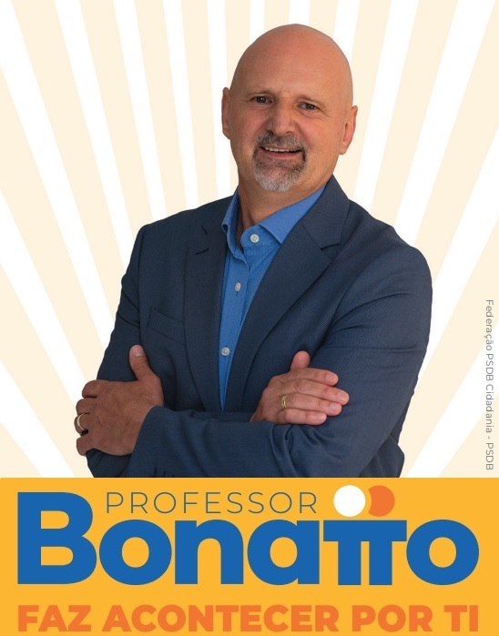
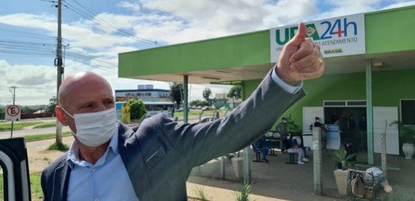
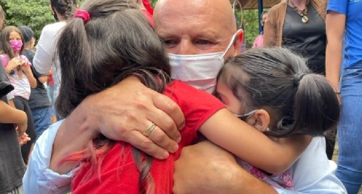
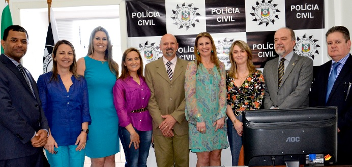

Bonatto faz pela Saúde!
Durante a pandemia, assumiu a Secretaria de Saúde
Como prefeito construiu a UPA de Viamão
Como deputado estadual vai lutar pela construção do hospital regional

Professor Gestor
Como prefeito entregou uniforme para todos alunos de Viamão
Entregou 2 escolas e deixou mais 11 em construção
Como deputado estadual vai levar sua experiência como professor e também gestor para trazer esperança de um mundo melhor

Bonatto faz pelo empreendedor
Criou refaz Viamão, maior programa de renegociação de dívidas
Implantou financiamento a juros zero durante a pandemia
Como deputado estadual será o representante de Viamão e Região Metropolitana no centro do poder
Bonatto tem história
Bonatto faz parte da política gaúcha a 40 anos
Educar faz parte da sua vida, como prefeito construiu 11 escolas em Viamão
Como deputado estadual vai buscar recursos para Região Metropolitana
Bonatto é mais segurança pra ti!
Como prefeito criou a Delegacia da Mulher em Viamão
Implantou as primeiras câmeras de monitoramento de Viamão
Como deputado estadual vai buscar recursos para a instalação do cercamento eletrônico das principais vias da Região Metropolitana

Bonatto sabe o caminho!
Durante a sua gestão reduziu em 55 centavos a passagem de ônibus
Investiu no aumento e melhoria da frota escolar de Viamão
Como deputado estadual vai lutar pela melhoria do sistema de transporte intermunicipal, com tarifas redução das tarifas e mais conforto para o trabalhador